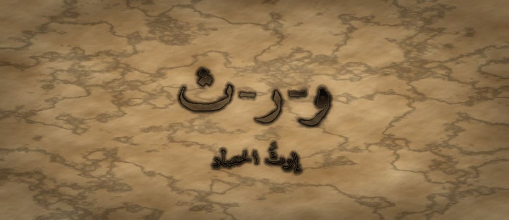

مَطبعةُ جُذور · دبي · MCMXXVI · سِلْسِلَةُ فَنِّ البَيان

مَرحلةُ الحَصَاد · الفئة · الجذر و-ر-ث · ابن خلدون
❦ ✦ ❧
السِّفْرُ ٢٠ — إرثُ الحصاد
«لَمْ أَكُنْ شَجَرَةً حَتَّى صِرْتُ تُرْبَةً لِبَذْرَةٍ لَيْسَتْ مِنِّي»

الرِّسَالَةُ الجَوْهَرِيَّة
آخِرُ مَا يَتَعَلَّمُهُ الْبَلِيغُ أَلَّا يَكُونَ هُوَ آخِرَ مَنْ يَتَكَلَّمُ. الْإِرْثُ لَيْسَ أَنْ تُعْطِيَ مَا مَلَكْتَ، بَلْ أَنْ تَصْنَعَ مَنْ يَقْدِرُ أَنْ يَأْخُذَ. وَالشَّجَرَةُ لَا تُقَاسُ بِطُولِهَا، بَلْ بِعَدَدِ الْبُذُورِ الَّتِي خَرَجَتْ مِنْهَا وَنَسِيَتْ أَنَّهَا مِنْهَا.
بِطَاقَةُ هُوِيَّةِ السِّفْر
| المستوى / الدرجة | الْحَصَاد — شَجَرَةٌ أُمٌّ (الدرجةُ الخاتمةُ في السلسلةِ كلِّها) |
| الفئة العمرية | ١٩ سنةً فما فوقُ · وهو سِفرُ المعلّمِ والمرافقِ والوالدِ أيضًا |
| الجذر الأساسي | و – ر – ث · الْإِرْثُ: مَا يَبْقَى حَيًّا بَعْدَ صَاحِبِهِ |
| أسرة الجذر | وَرِثَ · إِرْث · وَارِث · مِيرَاث · تُرَاث · تَوْرِيث (كلُّها من و-ر-ث) |
| المحطّة | الْإِرْثُ — أَنْ تُصَيِّرَ مَا تَعَلَّمْتَهُ بَذْرَةً فِي غَيْرِكَ |
| المرساة الحسّيّة | وضعُ بذرةٍ حقيقيّةٍ في كفٍّ مفتوحةٍ ثمَّ إسقاطُها في تربةٍ دونَ إمساكِها ثانيةً |
| الاستعارة | البذرةُ التي تنفّستْ في السفرِ الأوّلِ صارتْ شجرةً، فأخرجتْ من جوفِها بذرةً تتنفّسُ وحدَها |
| الشخصيتان الحكيمتان | ابنُ خلدونَ (مؤرّخُ العُمرانِ) + الجَدّةُ رملة — وفي هذا السفرِ تُسلِّمُ الجَدّةُ دورَها |
| الشخصية الرمزيّة | نورُ — شجرةٌ أمٌّ، وقد كانتْ بذرةً في السفرِ الأوّلِ |
| الشخصية المضادّة | الرِّيحُ الْعَقِيمُ — شخصيّةٌ رمزيّةٌ (لا تاريخيّةٌ) تنثرُ البذورَ على الصخرِ، وتتعلّمُ أن تُوصِلَها إلى تربةٍ |
| مؤشّر الرصد الوصفيّ | يُعلِّمُ مهارةً واحدةً لغيرِهِ ثمَّ يُتيحُ له أن يؤدّيَها على غيرِ طريقتِهِ دونَ تصحيحٍ |
| مجال CASEL | الوعيُ الاجتماعيُّ + المهاراتُ العلائقيّةُ (Social Awareness · Relationship Skills) |
| الإسناد المرجعيّ | استرشادًا بأدبيّاتِ تعلُّمِ الأقرانِ · استرشادًا بمستوياتِ التعبيرِ المتقدّمِ |
| المرجعُ النظريّ | TRT — نَظَرِيَّةُ القراءةِ الملموسةِ |
| موقعُ السفرِ | خاتمةُ الأسفارِ العشرينَ · يُغلِقُ القوسَ الذي فُتِحَ في «نَفَسِ البذرةِ» |
صَاحِبُ السِّفْرِ مِنَ التُّرَاث
عبدُ الرحمنِ بنُ خلدونَ مؤرّخٌ وعالِمُ اجتماعٍ من القرنِ الثامنِ الهجريِّ، صاحبُ «المقدّمةِ»، بحثَ في نشوءِ العُمرانِ وأطوارِهِ وكيفَ ينتقلُ من جيلٍ إلى جيلٍ. رأى أنَّ الصنائعَ والعلومَ لا تحيا إلّا بالتلقّي والملَكةِ المكتسبةِ بالممارسةِ. نستلهمُ منه هنا: أنَّ الحضارةَ سلسلةُ توريثٍ، وأنَّ ما لا يُنقَلُ يَبِدُ.
الشَّخْصِيَّةُ المُضَادَّة — الرِّيحُ الْعَقِيمُ — رمزٌ للعطاءِ بِلا وِعاءٍ؛ تحملُ البذورَ الكثيرةَ وتنثرُها على الصخرِ فلا تُنبِتُ شيئًا. تتعلّمُ في النهايةِ أن تُبطئَ وتَخفِضَ وتضعَ بذرةً واحدةً في تربةٍ واحدةٍ، فتصيرَ ريحًا لاقِحًا.
الجَذْرُ وَأُسْرَتُه
و-ر-ث — وَرِثَ · إِرْث · وَارِث · مِيرَاث · تُرَاث · تَوْرِيث
الجذرُ (و-ر-ث) مثالٌ واويٌّ، تسقطُ واوُهُ في المضارعِ «يَرِثُ» لوقوعِها بينَ ياءٍ وكسرةٍ، وتثبتُ في المصدرِ «وِرَاثَة» وفي «مِيرَاث» بعدَ قلبِها ياءً لسكونِها وانكسارِ ما قبلَها. ولاحِظِ الفرقَ: «مِيرَاث» ما يُترَكُ من مالٍ، و«تُرَاث» ما يُترَكُ من علمٍ وصنعةٍ — وهذا السفرُ في الثاني.
القِصَّةُ الكَامِلَة
المشهد ١ — نورُ شجرةٌ، والجَدّةُ رملةُ تُسلِّمُ
صَارَتْ نُورُ شَجَرَةً عَالِيَةً، ظِلُّهَا يَسَعُ الْحَيَّ كُلَّهُ، وَتَحْتَهَا يَجْلِسُ الصِّغَارُ يَسْأَلُونَ. وَجَاءَتْهَا الْجَدَّةُ رَمْلَةُ فِي صَبَاحٍ هَادِئٍ، وَقَدْ ثَقُلَتْ خُطْوَتُهَا، وَقَالَتْ: «يَا نُورُ، مَشَيْتُ مَعَكِ مِنْ يَوْمِ كُنْتِ بَذْرَةً لَا تَعْرِفُ كَيْفَ تَتَنَفَّسُ. وَالْيَوْمَ لَمْ يَبْقَ لِي شَيْءٌ أُعَلِّمُكِ إِيَّاهُ — إِلَّا شَيْئًا وَاحِدًا.» قَالَتْ نُورُ: «مَا هُوَ يَا جَدَّةُ؟» قَالَتِ الْجَدَّةُ: «أَنْ تَتَعَلَّمِي كَيْفَ تَنْتَهِينَ. فَكُلُّ مَا تَعَلَّمْتِهِ حَتَّى الْآنَ كَانَ لِتَبْدَئِي، وَبَقِيَ أَنْ تَعْرِفِي كَيْفَ تُسَلِّمِينَ.» وَسَكَتَتْ نُورُ طَوِيلًا، فَقَدْ كَانَ هَذَا أَصْعَبَ مَا سُئِلَتْهُ. ثُمَّ أَضَافَتِ الْجَدَّةُ وَهِيَ تَبْتَسِمُ: «أَتَذْكُرِينَ حِينَ كُنْتِ تَخَافِينَ أَنْ تُصَوِّتِي؟ لَمْ أُعْطِكِ يَوْمَئِذٍ صَوْتِي، بَلْ أَعْطَيْتُكِ كَفِّي عَلَى حَلْقِي لِتَعْرِفِي صَوْتَكِ أَنْتِ. هَكَذَا يَكُونُ الْعَطَاءُ: أَنْ تَدُلَّ لَا أَنْ تَحُلَّ.»
المشهد ٢ — نورُ تُمسِكُ بما تعلَّمتْ ولا تُعطيهِ
حَاوَلَتْ نُورُ أَنْ تُعَلِّمَ صَغِيرًا جَلَسَ تَحْتَهَا. قَالَتْ لَهُ: «قُلْهَا هَكَذَا»، فَقَالَهَا عَلَى غَيْرِ وَجْهِهَا، فَصَحَّحَتْ لَهُ. ثُمَّ قَالَ رَأْيًا يُخَالِفُ رَأْيَهَا، فَصَحَّحَتْ لَهُ. ثُمَّ سَكَتَ الصَّغِيرُ وَلَمْ يَعُدْ يَتَكَلَّمُ. فَنَظَرَتْ نُورُ إِلَى نَفْسِهَا فَزِعَةً: كَانَتْ تُعْطِيهِ كَلَامَهَا هِيَ، لَا مَهَارَتَهَا هُوَ. وَتَذَكَّرَتْ حِينَ كَانَتْ بَذْرَةً خَائِفَةً، وَكَيْفَ لَمْ تَقُلْ لَهَا الْجَدَّةُ يَوْمًا: «قُولِيهَا هَكَذَا»، بَلْ قَالَتْ دَائِمًا: «جَرِّبِي، وَالْمِسِي، وَانْظُرِي مَاذَا يَحْدُثُ.» فَهَمَسَتْ: «أَنَا أُوَرِّثُ ظِلِّي، وَالْمَطْلُوبُ أَنْ أُوَرِّثَ الْجُذُورَ.» وَجَلَسَتْ نُورُ تَنْظُرُ إِلَى الصَّغِيرِ السَّاكِتِ، وَقَدْ عَرَفَتْ أَنَّهَا فَعَلَتْ بِهِ مَا فَعَلَهُ الرَّعْدُ الْأَجْوَفُ بِهَا فِي أَوَّلِ عُمْرِهَا: مَلَأَتِ الْمَكَانَ حَتَّى لَمْ يَبْقَ فِيهِ مَوْضِعٌ لِصَوْتٍ صَغِيرٍ. فَاعْتَذَرَتْ إِلَيْهِ، وَكَانَ اعْتِذَارُهَا أَوَّلَ دَرْسٍ صَحِيحٍ أَعْطَتْهُ إِيَّاهُ.
المشهد ٣ — الرِّيحُ العقيمُ تنثرُ على الصخرِ
مَرَّتِ الرِّيحُ الْعَقِيمُ مُحَمَّلَةً بِأُلُوفِ الْبُذُورِ، وَقَالَتْ فِي فَخْرٍ: «أَنَا أَكْرَمُ مِنْكِ يَا نُورُ! أَحْمِلُ فِي يَوْمٍ وَاحِدٍ بُذُورًا لَا تُحْصَى وَأَنْثُرُهَا فِي كُلِّ مَكَانٍ.» ثُمَّ نَثَرَتْ حَمْلَهَا كُلَّهُ فَوْقَ صَخْرَةٍ عَارِيَةٍ، وَمَضَتْ. وَبَقِيَتِ الْبُذُورُ عَلَى الْحَجَرِ يَوْمًا وَيَوْمَيْنِ، ثُمَّ جَفَّتْ وَلَمْ يَنْبُتْ مِنْهَا وَاحِدَةٌ. قَالَتْ نُورُ حِينَ عَادَتِ الرِّيحُ: «مَا أَعْطَيْتِ شَيْئًا، إِنَّمَا تَخَلَّصْتِ مِنْ شَيْءٍ. الْعَطَاءُ أَنْ تَعْرِفِي أَيْنَ تَضَعِينَ، لَا كَمْ تَحْمِلِينَ.» فَغَضِبَتِ الرِّيحُ وَمَضَتْ، وَلَكِنَّ الْكَلِمَةَ عَلِقَتْ بِهَا. وَبَقِيَتِ الْبُذُورُ عَلَى الصَّخْرَةِ شَاهِدَةً: عَطَاءٌ كَثِيرٌ لَمْ يَصِرْ حَيَاةً. وَتَذَكَّرَتْ نُورُ مُعَلِّمِينَ كَثِيرِينَ يَقُولُونَ كَلَامًا جَمِيلًا لَا يَجِدُ فِي السَّامِعِ تُرْبَةً، فَعَزَمَتْ أَلَّا تَكُونَ مِنْهُمْ، وَأَنْ تَسْأَلَ قَبْلَ أَنْ تُعْطِيَ: «هَلْ هُنَا تُرَابٌ؟»
المشهد ٤ — ابنُ خلدونَ يُعلِّمُها قانونَ التوريثِ
جَاءَ ابْنُ خَلْدُونَ يَحْمِلُ دَفْتَرًا، وَجَلَسَ فِي ظِلِّ نُورَ وَقَالَ: «يَا نُورُ، نَظَرْتُ فِي الْأُمَمِ فَوَجَدْتُ أَنَّ الصَّنْعَةَ لَا تُورَثُ بِالْقَوْلِ، بَلْ بِالْمُمَارَسَةِ حَتَّى تَصِيرَ مَلَكَةً فِي صَاحِبِهَا. وَالْمُعَلِّمُ الَّذِي يُعْطِي جَوَابَهُ يُنْشِئُ نَاقِلًا، وَالَّذِي يُعْطِي طَرِيقَتَهُ يُنْشِئُ عَالِمًا، وَالَّذِي يَتْرُكُ لِتِلْمِيذِهِ أَنْ يُخْطِئَ وَيُصْلِحَ يُنْشِئُ وَارِثًا.» ثُمَّ أَغْلَقَ دَفْتَرَهُ وَقَالَ: «وَعَلَامَةُ التَّوْرِيثِ التَّامِّ أَنْ يَصِيرَ تِلْمِيذُكِ قَادِرًا عَلَى مُخَالَفَتِكِ بِأَدَبٍ، مُسْتَعْمِلًا مَا عَلَّمْتِهِ إِيَّاهُ. فَإِنْ لَمْ يُخَالِفْكِ أَبَدًا، فَمَا وَرِثَ — بَلْ حَفِظَ.» ثُمَّ قَالَ وَهُوَ يَقُومُ: «وَالْأُمَمُ لَا تَسْقُطُ حِينَ يَمُوتُ عُلَمَاؤُهَا، بَلْ حِينَ يَمُوتُونَ وَلَمْ يَتْرُكُوا مَنْ يُخَالِفُهُمْ. فَاصْنَعِي مَنْ يَسْتَغْنِي عَنْكِ، فَذَلِكَ وَحْدَهُ مَا يَبْقَى مِنْكِ.» فَبَكَتْ نُورُ قَلِيلًا، ثُمَّ ابْتَسَمَتْ.
المشهد ٥ — نورُ تُخرِجُ بذرتَها
عَادَتْ نُورُ إِلَى الصَّغِيرِ، وَلَمْ تَقُلْ: «قُلْهَا هَكَذَا». قَالَتْ: «خُذْ نَفَسًا، ثُمَّ ضَعْ كَفَّكَ عَلَى حَلْقِكَ، ثُمَّ انْظُرْ إِلَى مَنْ أَمَامَكَ، ثُمَّ أَنْصِتْ، ثُمَّ اسْأَلْ.» فَفَعَلَ الصَّغِيرُ، وَخَرَجَ صَوْتُهُ مُرْتَعِشًا صَغِيرًا، ثُمَّ سَأَلَ سُؤَالًا لَمْ يَخْطُرْ لِنُورَ قَطُّ. فَاهْتَزَّتْ أَغْصَانُهَا كُلُّهَا فَرَحًا. ثُمَّ قَالَ الصَّغِيرُ: «أَنَا لَا أَتَّفِقُ مَعَكِ فِي شَيْءٍ قُلْتِهِ أَمْسِ»، وَذَكَرَ حُجَّتَهُ مُرَتَّبَةً هَادِئَةً. فَلَمْ تُصَحِّحْ لَهُ نُورُ، بَلْ قَالَتْ: «الْآنَ وَرِثْتَ.» وَشَعَرَتْ فِي جَوْفِهَا بِبَذْرَةٍ تُفَارِقُهَا — وَلَمْ يَكُنْ فِرَاقًا، بَلْ كَانَ أَوَّلَ اكْتِمَالِهَا. وَتَذَكَّرَتْ فِي تِلْكَ اللَّحْظَةِ كُلَّ مَا مَرَّ بِهَا: نَفَسًا أَوَّلَ، وَصَوْتًا مُرْتَعِشًا، وَنَظْرَةً، وَإِنْصَاتًا، وَسُؤَالًا، وَحِكَايَةً، وَحِوَارًا، وَاعْتِذَارًا، وَصَمْتًا، وَحُكْمًا. فَعَرَفَتْ أَنَّ كُلَّ ذَلِكَ لَمْ يَكُنْ لَهَا وَحْدَهَا، وَإِنَّمَا كَانَ يُعِدُّهَا لِهَذَا الْيَوْمِ.
المشهد ٦ — البذرةُ تتنفّسُ، والرِّيحُ تصيرُ لاقِحًا
سَقَطَتِ الْبَذْرَةُ فِي التُّرَابِ تَحْتَ الشَّجَرَةِ. وَفِي الْفَجْرِ، تَحَرَّكَ فِيهَا شَيْءٌ صَغِيرٌ، فَأَخَذَتْ نَفَسَهَا الْأَوَّلَ — كَمَا أَخَذَتْهُ نُورُ ذَاتَ يَوْمٍ بَعِيدٍ فِي السِّفْرِ الْأَوَّلِ. وَجَاءَتِ الرِّيحُ، وَلَكِنَّهَا لَمْ تَعْصِفْ هَذِهِ الْمَرَّةَ. هَبَّتْ هَبَّةً وَاحِدَةً خَفِيفَةً، فَغَطَّتِ الْبَذْرَةَ بِطَبَقَةٍ رَقِيقَةٍ مِنَ التُّرَابِ، ثُمَّ قَالَتْ: «تَعَلَّمْتُ. لَنْ أَحْمِلَ أَلْفًا بَعْدَ الْيَوْمِ؛ سَأَحْمِلُ وَاحِدَةً إِلَى مَوْضِعِهَا.» وَنَظَرَتْ نُورُ إِلَى مَكَانِ الْجَدَّةِ رَمْلَةَ فَوَجَدَتْهُ فَارِغًا، وَوَجَدَتْ نَفْسَهَا تَقُولُ لِلْبَذْرَةِ بِصَوْتِ الْجَدَّةِ: «جَرِّبِي، وَالْمِسِي، وَانْظُرِي مَاذَا يَحْدُثُ.» فَعَرَفَتْ أَنَّ الْجَدَّةَ لَمْ تَذْهَبْ. وَاهْتَزَّتْ أَغْصَانُ نُورَ فَوْقَ الْبَذْرَةِ الصَّغِيرَةِ كَأَنَّهَا تَقُولُ لَهَا: «ابْدَئِي، فَقَدْ بَدَأْتُ مِثْلَكِ.» وَهَكَذَا عَادَ السِّفْرُ الْأَوَّلُ يُفْتَحُ مِنْ جَدِيدٍ، لَا فِي نُورَ، بَلْ فِي مَنْ بَعْدَهَا — وَذَلِكَ هُوَ الْحَصَادُ كُلُّهُ.
النُّسْخَةُ المُخْتَصَرَة
قَالَتِ الْجَدَّةُ رَمْلَةُ لِنُورَ: «بَقِيَ أَنْ تَتَعَلَّمِي كَيْفَ تُسَلِّمِينَ.» فَحَاوَلَتْ نُورُ أَنْ تُعَلِّمَ صَغِيرًا، فَكَانَتْ تُصَحِّحُ لَهُ كُلَّ كَلِمَةٍ حَتَّى سَكَتَ. وَمَرَّتِ الرِّيحُ الْعَقِيمُ تَنْثُرُ أُلُوفَ الْبُذُورِ عَلَى الصَّخْرِ، فَلَمْ يَنْبُتْ مِنْهَا شَيْءٌ. فَقَالَ ابْنُ خَلْدُونَ: «مَنْ أَعْطَى جَوَابَهُ أَنْشَأَ نَاقِلًا، وَمَنْ أَعْطَى طَرِيقَتَهُ أَنْشَأَ وَارِثًا.» فَعَادَتْ نُورُ وَقَالَتْ لِلصَّغِيرِ: «خُذْ نَفَسًا، وَصَوِّتْ، وَانْظُرْ، وَأَنْصِتْ، وَاسْأَلْ.» فَفَعَلَ، ثُمَّ خَالَفَهَا بِأَدَبٍ، فَقَالَتْ: «الْآنَ وَرِثْتَ.» وَسَقَطَتْ مِنْهَا بَذْرَةٌ فِي التُّرَابِ، فَأَخَذَتْ نَفَسَهَا الْأَوَّلَ. وَحَمَلَتِ الرِّيحُ بَذْرَةً وَاحِدَةً إِلَى مَوْضِعِهَا، وَقَالَتْ: «تَعَلَّمْتُ.» وَاهْتَزَّتْ أَغْصَانُ نُورَ فَوْقَ الْبَذْرَةِ كَأَنَّهَا تَقُولُ: «ابْدَئِي، فَقَدْ بَدَأْتُ مِثْلَكِ.» فَعَادَ السِّفْرُ الْأَوَّلُ يُفْتَحُ مِنْ جَدِيدٍ فِي غَيْرِهَا، وَذَلِكَ هُوَ الْحَصَادُ كُلُّهُ. وَقَالَتِ الرِّيحُ الْعَقِيمُ وَهِيَ تُغَطِّي الْبَذْرَةَ بِتُرَابٍ رَقِيقٍ: «لَنْ أَحْمِلَ أَلْفًا بَعْدَ الْيَوْمِ؛ سَأَحْمِلُ وَاحِدَةً إِلَى مَوْضِعِهَا.» وَنَظَرَتْ نُورُ إِلَى مَكَانِ الْجَدَّةِ فَوَجَدَتْهُ فَارِغًا، وَوَجَدَتْ صَوْتَ الْجَدَّةِ يَخْرُجُ مِنْ فَمِهَا هِيَ.
المِرْسَاةُ الحِسِّيَّة
يَضَعُ الْمُتَعَلِّمُ بَذْرَةً وَاحِدَةً فِي وَسَطِ كَفِّهِ وَيُغْلِقُهَا، وَيَذْكُرُ فِي سِرِّهِ مَهَارَةً وَاحِدَةً يُرِيدُ أَنْ يُوَرِّثَهَا. ثُمَّ يَفْتَحُ كَفَّهُ بِبُطْءٍ حَتَّى تَسْقُطَ الْبَذْرَةُ فِي التُّرَابِ، وَيُبْقِي كَفَّهُ مَفْتُوحَةً ثَوَانِيَ دُونَ أَنْ يَلْتَقِطَهَا. الْيَدُ الْمَفْتُوحَةُ هِيَ الدَّرْسُ كُلُّهُ. وَيُؤَدِّي الْحَرَكَةَ بِنَفْسِهِ كَامِلَةً.
العَنَاصِرُ الخَمْسَةُ لِلتَّطْبِيق
| المُخرَجُ اللُّغَويُّ | «أُورِثُ طَرِيقَتِي لَا جَوَابِي» — يقولُها المتعلّمُ قبلَ أن يُعلّمَ غيرَه، ثمَّ يصوغُ ما يريدُ نقلَه في خطواتٍ لا في نتيجةٍ. |
| الحركةُ الجسديّةُ | يمسكُ بذرةً بينَ أصبعَينِ، يفتحُ كفَّهُ ببطءٍ ويُسقِطُها في التربةِ، ولا يعودُ فيلتقطُها. الفتحُ هو الدرسُ، ويؤدّيهِ بنفسِهِ. |
| الدفءُ العلائقيُّ | يطلبُ ممّن علَّمَهُ أن يؤدّيَ المهارةَ على طريقتِهِ هو، ثمَّ يشكرُهُ على الاختلافِ صراحةً: «هذه طريقتُكَ، وقد نفعتْني». |
| البديلُ الحسّيُّ | من لا يستطيعُ التعاملَ مع التربةِ يستعملُ حبّةً خشبيّةً يُسقِطُها في وعاءٍ؛ الصوتُ الذي تُحدِثُهُ عندَ الوصولِ هو علامةُ التسليمِ. |
| الجسرُ الإنجليزيُّ | «I pass on my method, not my answer.» — تُقالُ بالعربيّةِ ثمَّ بالإنجليزيّةِ حفاظًا على التوازنِ اللُّغَويِّ. |
دَلِيلُ الأَهْلِ وَالمُعَلِّم
| قبل الجلسة | ضعوا الأجهزةَ في صندوقٍ مغلقٍ، وأحضِروا وعاءَ ترابٍ وبذورًا. اكتبوا على ورقةٍ اسمَ مهارةٍ واحدةٍ يريدُ كلُّ فردٍ أن يُورِثَها لغيرِهِ، دونَ أن يقرأَها أحدٌ بعدُ. |
| أثناء الجلسة | يُعلِّمُ كلُّ فردٍ مهارتَهُ لآخرَ بخطواتٍ لا بنتيجةٍ، ثمَّ يصمتُ ويتركُهُ يؤدّيها على طريقتِهِ. القاعدةُ: لا تصحيحَ في المحاولةِ الأولى إطلاقًا، والاختلافُ يُشكَرُ لا يُقوَّمُ. |
| بعد الجلسة | ازرعوا البذورَ في وعاءٍ واحدٍ وضعوهُ في مكانٍ ظاهرٍ. اكتبوا على بطاقةٍ بجانبِهِ: «هنا تعلَّمْنا أن نُعطيَ الطريقةَ لا الجوابَ»، وراقبوا نموَّهُ أسابيعَ بِلا تعليقٍ يوميٍّ. |
مُؤَشِّرَاتُ الرَّصْدِ الوَصْفِيَّة
| ما تُلاحِظُه | ماذا يعني |
|---|---|
| يشرحُ خطواتِهِ بدلَ أن يعطيَ نتيجتَهُ | مؤشّرٌ وصفيٌّ على انتقالِ التعليمِ من نقلِ المعلومةِ إلى بناءِ المَلَكةِ، يُرصَدُ ولا يُبنى عليه منعٌ. |
| يحتملُ أن يؤدّيَ غيرُهُ المهارةَ بطريقةٍ مختلفةٍ | علامةٌ على أنَّ الملكيّةَ سُلِّمتْ حقًّا؛ التمسّكُ بالطريقةِ الواحدةِ إبقاءٌ لا توريثٌ. |
| يفرحُ حينَ يُخالِفُهُ من علَّمَهُ بأدبٍ | أعمقُ مؤشّراتِ هذا السفرِ: الوارثُ يُخالِفُ، والحافظُ يُكرّرُ. |
| يذكرُ من علَّمَهُ بالاسمِ حينَ يُعلِّمُ | وعيٌ بالسلسلةِ؛ يربطُ نفسَهُ بما قبلَهُ وما بعدَهُ، وهو جوهرُ التراثِ الحيِّ. |
مُفْرَدَاتُ السِّفْر
| الكلمة | المعنى |
|---|---|
| إِرْثٌ | ما يبقى حيًّا في غيرِكَ بعدَ أن تمضيَ |
| تَوْرِيثٌ | أن تنقلَ الطريقةَ حتّى تصيرَ مَلَكةً في غيرِكَ |
| تُرَاثٌ | ما وَرِثْناهُ من علمٍ وصنعةٍ لا من مالٍ |
| وَارِثٌ | من أخذَ الطريقةَ فصارَ قادرًا أن يزيدَ عليها |
| مَلَكَةٌ | قدرةٌ رسختْ بالممارسةِ حتّى صارتْ سهلةً |
| اِسْتِمْرَارٌ | أن يبقى الأثرُ حيًّا وإن غابَ صاحبُهُ |
الجِسْرُ الإِنْجْلِيزِيّ
| عربي | English |
|---|---|
| أُورِثُ طَرِيقَتِي | I pass on my method |
| لَا جَوَابِي | not my answer |
| يَدٌ مَفْتُوحَةٌ | an open hand |
| الْوَارِثُ يُخَالِفُ | an heir may differ |
| بَذْرَةٌ وَاحِدَةٌ فِي مَوْضِعِهَا | one seed in its right place |
| مَا لَا يُنْقَلُ يَنْتَهِي | what is not passed on ends |
أَسْئِلَةُ الفَهْم
- مَاذَا فَعَلَتِ الرِّيحُ الْعَقِيمُ بِالْبُذُورِ، وَلِمَاذَا لَمْ يَنْبُتْ مِنْهَا شَيْءٌ؟ (تَذَكُّرٌ)
- لِمَاذَا قَالَتْ نُورُ لِلصَّغِيرِ «الْآنَ وَرِثْتَ» بَعْدَ أَنْ خَالَفَهَا لَا بَعْدَ أَنْ وَافَقَهَا؟ (اِسْتِنْتَاجٌ)
- أَمْسِكْ بَذْرَةً وَأَغْلِقْ كَفَّكَ، ثُمَّ افْتَحْهَا حَتَّى تَسْقُطَ وَلَا تَلْتَقِطْهَا — مَاذَا شَعَرْتَ فِي لَحْظَةِ الْفَتْحِ؟ (سُؤَالٌ حِسِّيٌّ حَرَكِيٌّ)
- مَنِ الَّذِي وَرَّثَكَ مَهَارَةً مَا زِلْتَ تَسْتَعْمِلُهَا، وَمَنِ الَّذِي تُرِيدُ أَنْ تُوَرِّثَهَا إِيَّاهُ؟ (رَبْطٌ شَخْصِيٌّ)
نَشَاطٌ وَوَسَائِط
| نشاطٌ فنّيّ | «شجرةُ العشرينَ»: يرسمُ المتعلّمُ شجرةً واحدةً، ويكتبُ على كلِّ غصنٍ من أغصانِها العشرينَ فعلًا من أفعالِ السلسلةِ (أتنفّسُ، أُصوّتُ، أنظرُ... حتّى أُورِثُ)، ثمَّ يرسمُ تحتَ الشجرةِ بذرةً واحدةً ويكتبُ فيها اسمَ من سيُعلِّمُهُ أوّلَ فعلٍ. |
| نشاطٌ تمثيليّ | «تسليمُ الظلِّ»: اثنانِ — أحدُهما شجرةٌ تُعلِّمُ بخطواتٍ، والآخرُ بذرةٌ تُجرِّبُ. الشرطُ أنَّ الشجرةَ لا تنطقُ بأيِّ تصحيحٍ. ثمَّ يتبادلانِ الدورَينِ، ويتحدّثانِ عن الفرقِ بينَ أن تُعطيَ وأن تُتيحَ — بِلا مقارنةٍ بينَ الأداءَينِ. |
جِسْرُ الذَّاكِرَة
هذا السفرُ يُغلِقُ قوسَ العشرينَ كلِّها: بدأتْ نورُ بَذرةً تتعلّمُ أن تتنفّسَ وتُصوّتَ وتنظرَ، ثمَّ برعمًا يُنصِتُ ويسألُ ويلطُفُ ويحكي، ثمَّ غصنًا يُنغّمُ ويُومئُ ويُحاورُ ويعتذرُ، ثمَّ أوراقًا تتعاطفُ وتختلفُ وتصمتُ وتُشاورُ، ثمَّ ثمارًا تُقنِعُ وتُبرِزُ وتسوقُ، ثمَّ حصادًا يحكمُ. واليومَ تُورِثُ. وإلى الأمامِ: البذرةُ التي سقطتْ تحتَ الشجرةِ تأخذُ نَفَسَها الأوّلَ — فيبدأُ السفرُ الأوّلُ من جديدٍ في غيرِكَ.
قَائِمَةُ التَّحَقُّق
- الجذرُ (و-ر-ث) صحيحٌ صرفيًّا، والفرقُ بين «مِيرَاث» و«تُرَاث» مُبيَّنٌ للمعلّمِ، وأسرتُهُ معروضةٌ بدقّةٍ — صفرُ أخطاءٍ صرفيّةٍ.
- القوسُ التراكميُّ للأسفارِ العشرينَ مذكورٌ كاملًا في جسرِ الذاكرةِ، ويُغلِقُ ما فُتِحَ في السفرِ الأوّلِ «نَفَسُ البذرةِ» — صفرُ حلقةٍ منفصلةٍ.
- ابنُ خلدونَ مُوثَّقٌ تاريخيًّا بهامشٍ قصيرٍ صحيحٍ، والرِّيحُ العقيمُ موسومةٌ صراحةً كرمزيّةٍ لا تاريخيّةٍ، وتتحوّلُ ولا تُشيطَنُ.
- لا حبسَ نفَسٍ ولا تمرينَ نفَسٍ، وحدُّ اللمسِ محفوظٌ: كلُّ حركةٍ يؤدّيها المتعلّمُ بنفسِهِ، وأيُّ تسليمٍ بينَ اثنينِ اختياريٌّ بموافقةٍ صريحةٍ.
- المؤشّراتُ الأربعةُ وصفيّةٌ للرصدِ فقط، والإسنادُ بصيغةِ «استرشادًا بـ» بِلا ادّعاءِ اعتمادٍ، والتسميةُ TRT — نَظَرِيَّةُ القراءةِ الملموسةِ.
- التشكيلُ مدقّقٌ على كلِّ كلمةٍ في القصّةِ والنسخةِ المختصرةِ والطقوسِ، والجَدّةُ رملةُ حاضرةٌ وتُسلِّمُ دورَها كما يقتضي ختامُ السلسلةِ.

مَطبعةُ جُذور · دبي · MCMXXVI · صمّمه وطوّره د. عادل ف. عامر
Designed and developed by Dr. Adel F. Amer · Amer (2024) · CC BY-NC-SA 4.0
↤ عودةٌ إلى خِزانةِ الأسفار